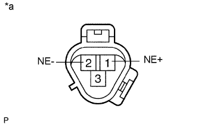

ДАТЧИК ПОЛОЖЕНИЯ КОЛЕНЧАТОГО ВАЛА > ПРОВЕРКА |
| 1. ПРОВЕРЬТЕ ДАТЧИК ПОЛОЖЕНИЯ КОЛЕНЧАТОГО ВАЛА |
|  |
Измерьте сопротивление в соответствии со значениями, приведенными в таблице ниже.
| Контакты для подключения диагностического прибора | Режим | Заданные условия |
| 1 (NE+) - 2 (NE-) | Холодное состояние | 1630 - 2740 Ом |
| Горячее состояние | 2065 - 3225 Ом |
| *a | Устройство с отсоединенным жгутом проводов (датчик положения коленчатого вала) |